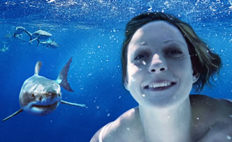

Tamara White is a retoucher with over 10 years industry experience. She has worked for digital photographers in London and Canada, design studios in Sydney and Canberra, and her latest position was Senior Digital Prepress Operator with the Australian women's magazine CLEO. She recently moved to San Francisco to expand her horizons and to explore career opportunities. She has set her sights on completing a 3D animation course to take her furthur into the rendering, compositing world. Tamara has a love and passion for her work.
